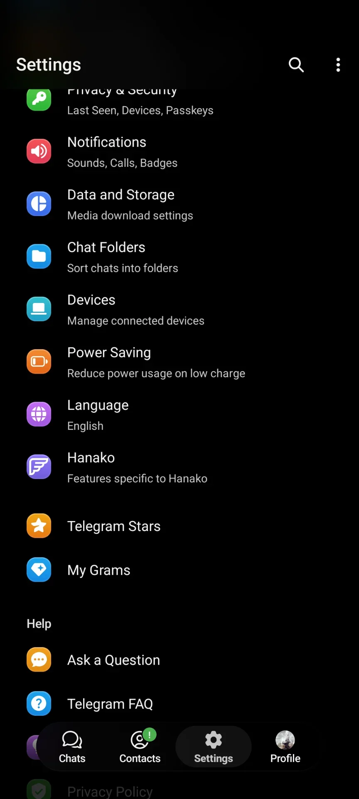
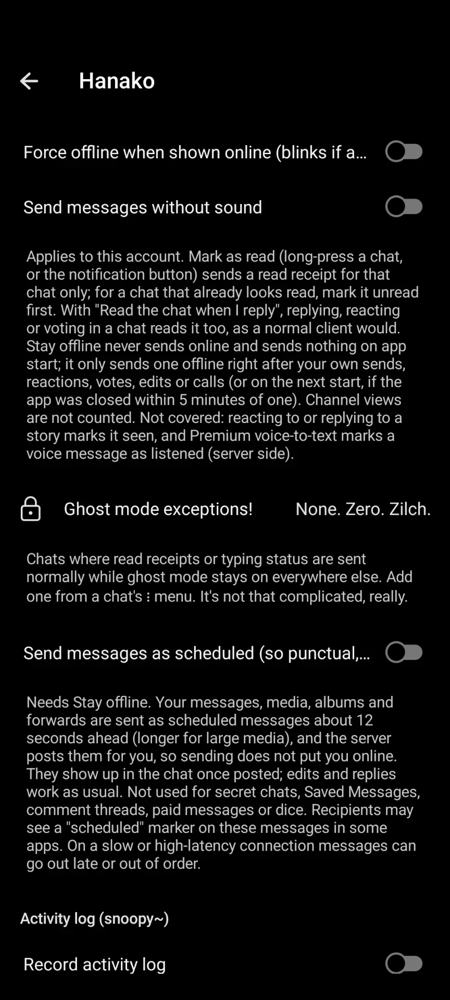

Hanako
An unofficial Telegram client for Android, built on Mercurygram.
Hanako is experimental, and a fully vibecoded fork. Every change it adds on top of Mercurygram was written by AI coding agents, and most of it was never compiled or tested by a human before release. Expect bugs and use it at your own risk. Hanako is not affiliated with Telegram or the Mercurygram project, so please don’t report Hanako bugs to them.
Everything Mercurygram does, plus the following.
Ghost mode and privacy
- Per-account ghost mode: no read receipts, typing, online status or story views
- Ghost exceptions for chosen chats
- Send as scheduled, so sending never shows you online
- Story ghost guard
- Peek at chats without marking them read
- Ask before sending voice, stickers, GIFs or calls
- Screenshots allowed, content protection ignored
Chat lock and hidden chats
- Lock chats with biometrics
- Hide locked chats; long-press the app title to reveal them
- Hide their notification text
Deleted and edited messages
- Deleted messages stay in the chat, greyed out
- Edits keep their history
- Media is saved, including view-once
- Vanished chats log
- Deleted media browser
Activity log
- A local last-seen and read log per contact, built from updates the app already receives
Streamer mode
- Pseudonyms
- Masked avatars and titles
- Dotted-out phone numbers
- Optional screen-capture block
Messages and chats
- Regex message filters and shadow-ban
- Message shots as images
- OpenPGP via OpenKeychain
- Profile ID with DC and registration date
Plugins
- JSON rule plugins
- Opt-in code plugins
Network
- Custom DNS-over-HTTPS
- Proxy auto-switch
- Disable the proxy while a VPN is on
Screenshots


Install
- On your phone, tap Add to Obtainium. It fills in everything, installs stable releases and keeps Hanako updated.
-
Or download
Hanako-<version>-arm64-v8a.apkfrom the latest release and install it. Only arm64-v8a builds are published. - If you want release candidates too, use the stable and pre-release Obtainium link instead.
The package ID is moe.hanako.chan. It installs as a separate app beside old Hanako
v1.0.x or Mercurygram, so you’ll need to log in again. The in-app updater is off; Obtainium or
GitHub Releases handle updates.